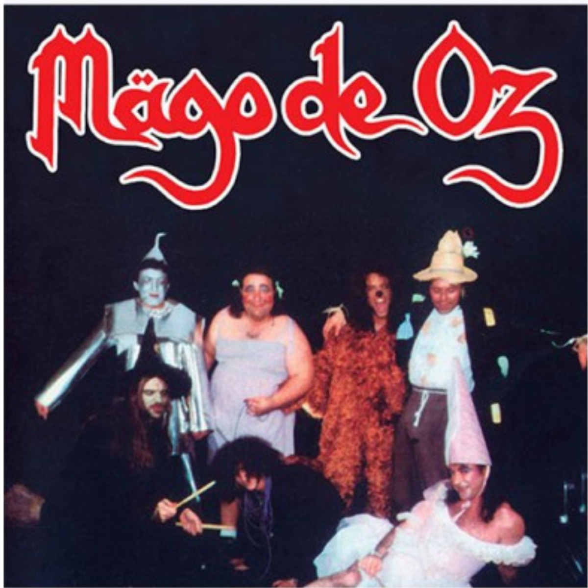

Finisterra es el cuarto álbum de estudio de la banda Mägo de Oz, suponiendo este su primer disco doble y su segunda ópera rock desde Jesús de Chamberí. Es el tercer álbum más vendido de la banda, llegando con 100.000 ejemplares vendidos a disco de oro y de platino, siendo solo superado por los Gaia I y II: la voz dormida, respectivamente. Contiene varias de las canciones más populares del grupo, tales como: La Danza del Fuego, Hasta que el Cuerpo Aguante, Fiesta Pagana, El que Quiera Entender que Entienda, entre otras. Es considerado por la mayoría de sus fanáticos como el mejor álbum de la agrupación, e igualmente la banda misma lo considera uno de los mejores que han hecho a lo largo de su trayectoria. Fue este trabajo el que catapultó a la banda a la fama internacional.
Finisterra
